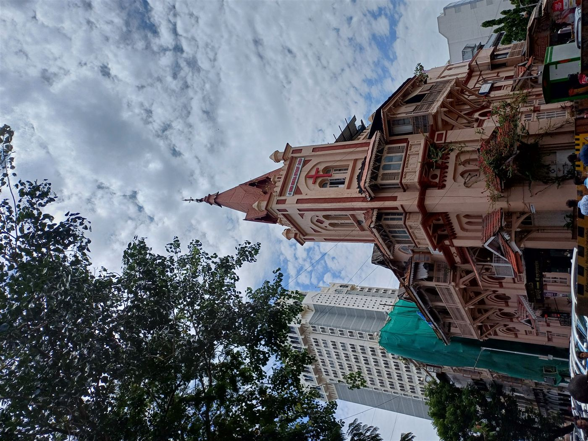

From the revival meetings of 1870 to the vibrant conference of today — 170 years of Methodist witness in Mumbai.
American Methodist Episcopal missionary William Butler arrives in Bareilly, beginning the Methodist mission in India.
The work grows enough to form the India Mission Conference — the first organized Methodist body in India.
Evangelist William Taylor's revival meetings establish Methodist congregations across Bombay, Poona, Calcutta, and other cities.
Churches established through Taylor's revival work are organized into the Bombay-Bengal Mission — the direct ancestor of today's MRC.
Bishop James M. Thoburn becomes the first Missionary Bishop for the Methodist Episcopal Church in India.
The Bowen Memorial Methodist Church is completed on Lytton Road (Tullock Road), Colaba — a landmark of Gothic Revival architecture in South Bombay.
Explore Bowen Memorial →The Bombay Annual Conference is formally established — the institutional ancestor of today's Mumbai Regional Conference.
The Methodist Missionary Society is established as an Indian-led missionary organization, with Jaswant Rao Chitambar as first Corresponding Secretary.
Jaswant Rao Chitambar becomes the first national Indian bishop of Southern Asia Methodism — a milestone in indigenous leadership.
On 7 January 1981, the Methodist Church in India is inaugurated as an Affiliated Autonomous Church at Madras.
Groundbreaking ceremony for Hutchings School Talegaon, a partnership between MRC and Good People International, Korea.
The 37th Mumbai Regional Conference is held at Rainforest Resorts, Igatpuri, continuing the annual tradition of governance and fellowship.
The 38th Mumbai Regional Conference convenes, with Bishop Dr. Newton M. Parmar as its Episcopal and Resident Bishop.
Emphasizing personal relationship with God through grace, prayer, and spiritual discipline.
John Wesley's call to "serve the present age" — faith expressed through practical service to others.
Methodism has always viewed education as mission — from Isabella Thoburn to Hutchings Schools today.
From the revival meetings of 1870 to the vibrant community of today, MRC continues to grow. Join us in writing the next chapter.